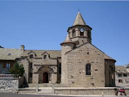
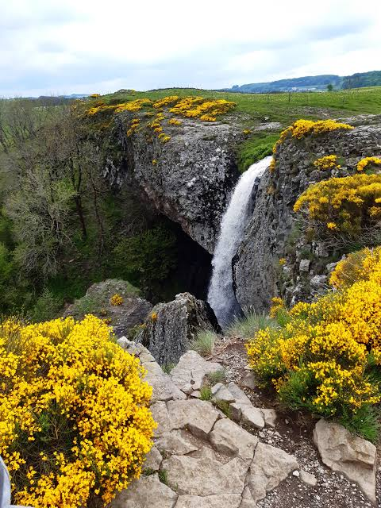

Posé à 1 180 mètres d'altitude sur le versant lozérien du plateau de l'Aubrac, Nasbinals doit son existence à sa position sur les grandes routes de pèlerinage qui, dès l'an mil, traversaient ces hautes terres. Un acte de donation daté de 1074 atteste déjà l'existence d'un lieu de culte à cet emplacement, sous l'autorité des Bénédictins de Saint-Victor de Marseille, qui y fondent un prieuré aux côtés de ceux de Chirac, du Monastier et de Saint-Urcize.

L'église romane Sainte-Marie, joyau de granit et de basalte
Sur cet emplacement s'élève, aux XIe et XIIe siècles, l'église Sainte-Marie, chef-d'œuvre de l'art roman auvergnat bâti dans le granit, le basalte et le tuf volcanique du plateau. En 1155, l'abbé Guillaume de Saint-Victor reconnaît à l'évêque de Mende, Aldebert, la juridiction du terroir, avant de céder le prieuré à la puissante Dômerie d'Aubrac, dont Nasbinals devient alors une dépendance. Le village, traversé par la Via Podiensis menant les pèlerins du Puy-en-Velay à Saint-Jacques-de-Compostelle en passant par Conques et Moissac, devient une étape incontournable sur ce chemin toujours emprunté aujourd'hui.
Remaniée au XIVe siècle sans perdre son caractère roman, l'église traverse les tourments de la guerre de Cent Ans puis de la Révolution avant de conserver, jusqu'à nos jours, son chevet à chapelles échelonnées et son clocher octogonal si caractéristique. Aujourd'hui bourg de moins de 600 habitants, Nasbinals demeure l'une des portes d'entrée les plus fréquentées du plateau de l'Aubrac, entre randonneurs, pèlerins et amateurs de grands espaces.
⛪
Visite pratique

La cascade du Déroc, halte rafraîchissante sur le plateau
⏱️
Durée
Environ 1h de visite du bourg
📊
Difficulté
Facile dans le village, plus sportive sur les sentiers du plateau
🚗
Accès
Plateau de l'Aubrac lozérien, à 1 180 m d'altitude
🎟️
Tarif
Village et église en accès libre
✦ Infos pratiques
Église Sainte-Marie Roman auvergnat XIe-XIIe siècle, classée Monument historique en 1921
Maison Charrier Ancienne demeure familiale, aujourd'hui Office de Tourisme
Buste de Pierrounet Hommage au célèbre rebouteux et guérisseur de l'Aubrac
GR 65 Chemin de Compostelle, tronçon réputé vers Saint-Chély-d'Aubrac (20 km)
Cascade du Déroc Chute de 30 m formée par le ruisseau du Gambaïse, accessible en boucle
Clocher octogonal Silhouette caractéristique visible depuis tout le plateau
Burons Cabanes de pierre sèche disséminées sur les estives environnantes
Place de l'Église Cœur du village, emblématique du Gévaudan
1
L'église Sainte-Marie
Édifice roman en croix latine, nef unique, transept débordant et abside en cul-de-four : ses pierres volcaniques colorées et son clocher octogonal en font un joyau de l'art roman auvergnat.
2
Le mobilier classé
À l'intérieur, un Christ en bois peint du XVIe siècle, un retable et une Vierge polychrome du XVIIe siècle sont classés Monument historique depuis 1921, aux côtés de saints sculptés dans les années 1990.
3
La Maison Charrier
Cette ancienne demeure, près de l'église, a été reconvertie en Office de Tourisme et abrite les services municipaux du village.
4
Le tronçon du GR 65
Le chemin de Saint-Jacques-de-Compostelle traverse directement le village avant de courir sur une vingtaine de kilomètres à travers pâturages, burons et murets de pierres sèches jusqu'à Saint-Chély-d'Aubrac.
5
La cascade du Déroc
Une boucle de randonnée mène à cette chute d'eau de 30 mètres, née du ruisseau du Gambaïse, halte fraîche et verdoyante au cœur du plateau granitique.
🏆
Reconnaissance & patrimoine
⛪
Église Sainte-Marie, Monument historique
Classée par arrêté du 27 octobre 1921, l'église romane de Nasbinals est considérée comme l'un des plus beaux édifices religieux du plateau de l'Aubrac.
MH depuis 1921
🥾
Chemins de Saint-Jacques-de-Compostelle, UNESCO
Étape sur la Via Podiensis, l'église et le village sont rattachés au bien inscrit au Patrimoine mondial de l'UNESCO au titre des chemins de Compostelle en France.
UNESCO
🏞️
Cœur du plateau de l'Aubrac
Nasbinals est l'une des principales portes d'entrée du plateau lozérien de l'Aubrac, entre pâturages d'estive, tourbières et burons de pierre sèche.
Site classé
🎨
Mobilier religieux classé
Le Christ en bois du XVIe siècle, le retable et la Vierge polychrome du XVIIe siècle de l'église sont protégés au titre des Monuments historiques.
MH mobilier
🥾
Nasbinals, étape sur le chemin de Compostelle
Depuis l'an mil, les drailles et les routes de pèlerinage organisent la traversée du plateau de l'Aubrac. La Via Podiensis, l'un des quatre grands chemins historiques vers Saint-Jacques-de-Compostelle, conduit les marcheurs du Puy-en-Velay jusqu'en Espagne en passant par Nasbinals, Conques, Moissac, Roncevaux, Pampelune et León : un itinéraire millénaire toujours parcouru aujourd'hui par des dizaines de milliers de pèlerins et randonneurs chaque année.
Marcher sur les sentiers de l'Aubrac, c'est s'immerger dans des panoramas grandioses, entre pâturages, burons et murets de pierres sèches.
— témoignage de randonneur sur le GR 65
Rattachée à la puissante Dômerie d'Aubrac, l'église de Nasbinals accueillait pèlerins et voyageurs épuisés par la traversée du plateau, terre nue et venteuse où l'on redoutait tempêtes de neige et brouillards. Aujourd'hui encore, le passage du GR 65 façonne la vie du village, entre gîtes d'étape, commerces dédiés aux marcheurs et rendez-vous saisonniers autour de cette tradition jacquaire toujours vivante.
💬
Le saviez-vous ? Anecdotes nasbinalaises
🖋️
Le baptême du futur député Charrier
C'est dans l'église de Nasbinals que fut baptisé en juillet 1755 Marc-Antoine Charrier, futur notaire puis député du Tiers-État, guillotiné à Rodez en 1793.
🩹
Pierrounet, le rebouteux de l'Aubrac
Pierre Brioude, dit « Pierrounet » (1832-1907), cantonnier et guérisseur réputé, soignait hommes et animaux dans toute la région : un buste lui rend aujourd'hui hommage dans le village.
🗿
Un chapiteau au combat mythologique
Parmi les chapiteaux sculptés de l'église, l'un représente une scène de combat mythologique, énigme sculptée que se plaisent à décrypter les visiteurs curieux.
🌋
Une église taillée dans le volcan
Granit, basalte et tuf volcanique se mêlent dans la pierre de l'église, offrant des teintes sombres et changeantes qui trahissent le passé volcanique du plateau.
📍
Aux alentours
Aubrac hameau et ancienne dômerie qui a donné son nom au plateau tout entier, point de départ de la grande transhumance, à une vingtaine de minutes.
Saint-Chély-d'Aubrac étape voisine sur le GR 65, à l'extrémité du célèbre tronçon de vingt kilomètres entre pâturages et burons.
Col de Bonnecombe l'un des hauts lieux de la fête de la transhumance en Lozère, entre randonnées et estives.
Aumont-Aubrac autre étape jacquaire, porte nord du plateau vers la Margeride.
Laguiole capitale aveyronnaise du couteau et du fromage, à une trentaine de minutes au sud.
Cascade du Déroc chute d'eau de 30 mètres accessible en boucle depuis le village, une pause nature appréciée l'été.